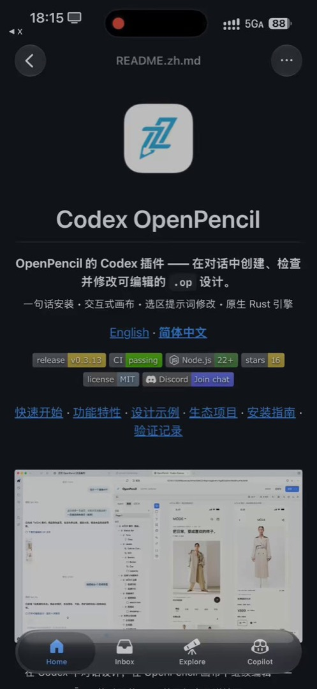
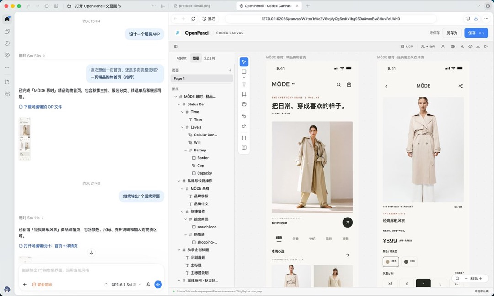
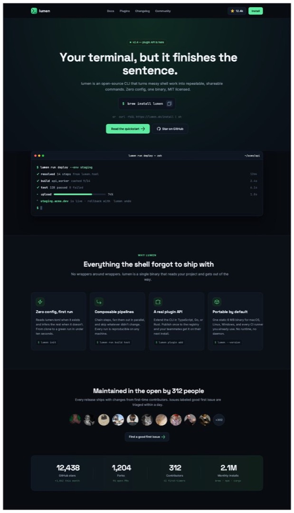
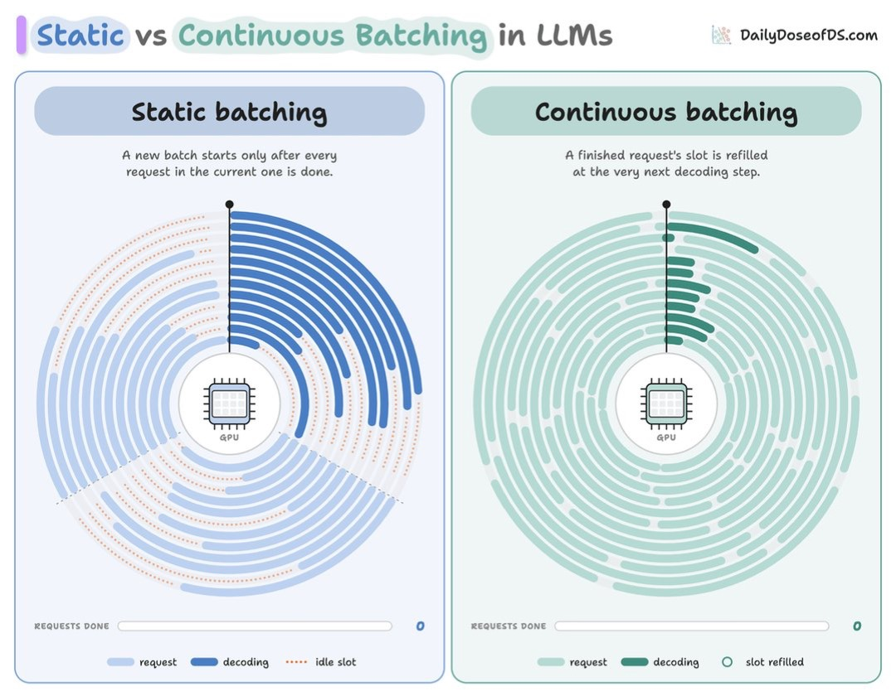
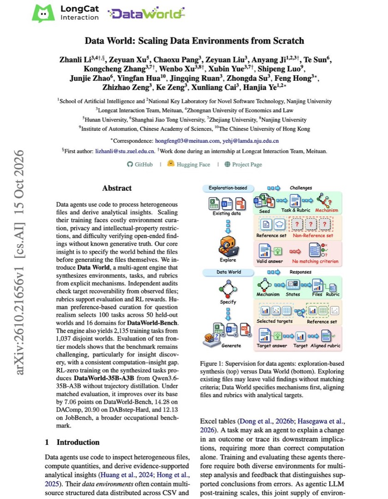
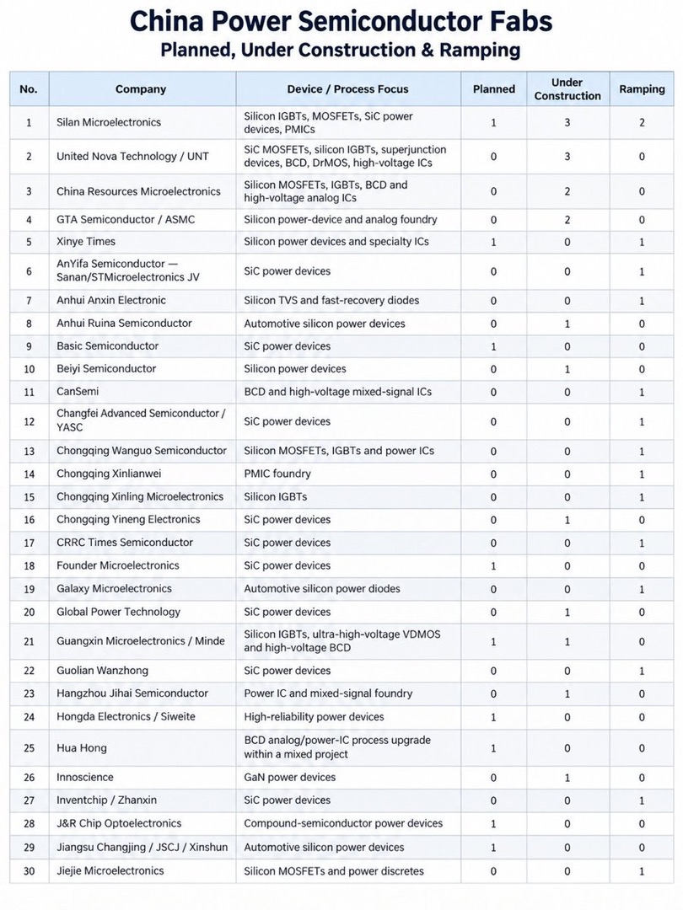
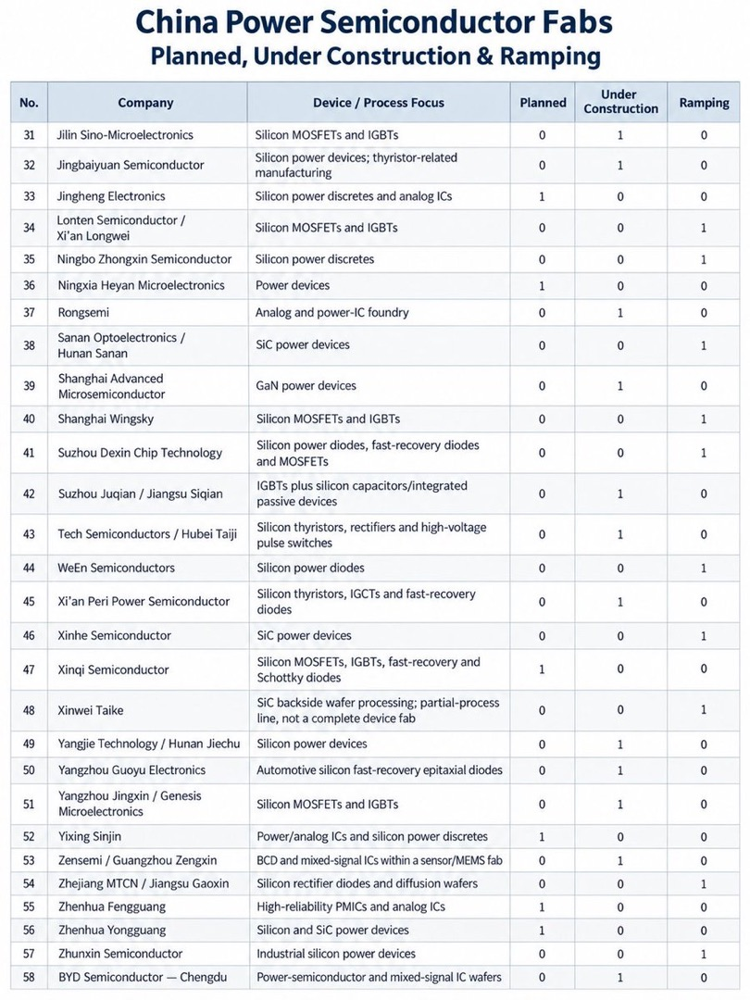
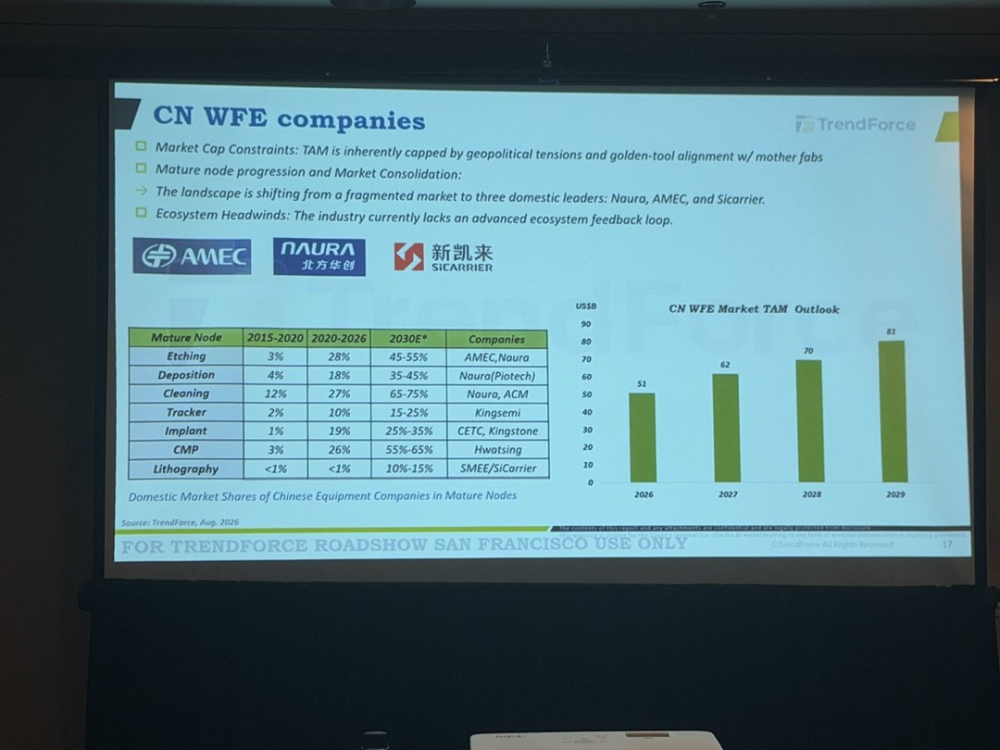
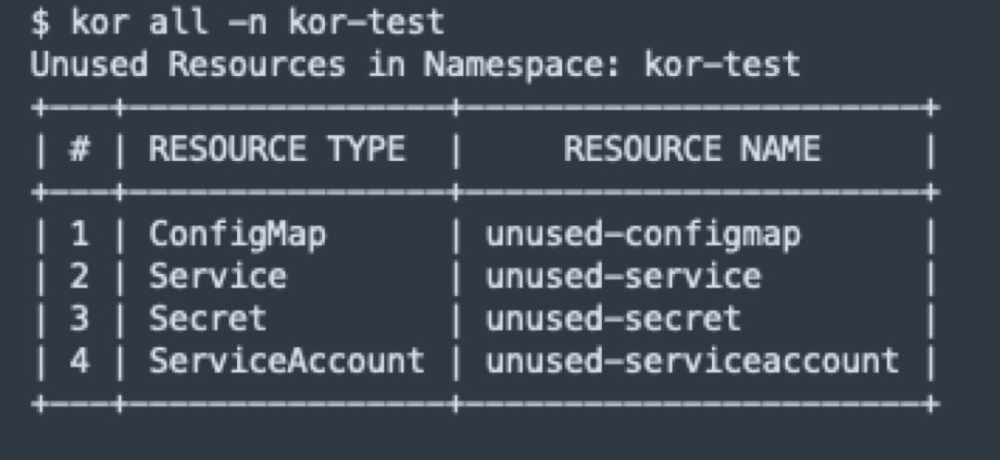

本期速览
01 OpenPencil设计稿接入Codex
02 XERJ检索相似开源仓库辅助AI编码
03 mubeng自动轮换代理绕过IP封锁
05 vLLM连续批处理实现23倍吞吐
06 DataWorld合成数据分析训练环境
10 Athenaion用代码生成古希腊3D城
01｜OpenPencil设计稿接入Codex
来源（X） · @Lonely__MH · 2026-10-18 18:35
把压箱底的底裤🩲都掏出来了
这底裤的含金量👇

引用内容
Fini.Yang @FiniYang
上次把 OpenPencil 接进了 DSH
这次轮到 Codex 了：codex-openpencil
🤗 一句话开始设计：
“用 op 设计一个单页服装 APP”
生成的是可编辑的设计稿
选中元素，让 Codex 局部修改
也可以在无限画布手动微调、预览交互，保存为 .op 文件
满意后，可导出 HTML / Vue / React / SwiftUI 等代码，交给 Codex 继续实现
除了 APP、网页
还能做教程图、对比图、轮播图、卡片和 PPT
这么多场景，兄弟们总有一个能用上吧 😎
👇 把这句话交给 Codex，自动安装并完成第一份设计：
按照 https://github.com/ZSeven-W/codex-openpencil 的 INSTALL.md 帮我安装并配置 OpenPencil，然后用 op 设计一个单页手机任务管理 APP，在 Codex 内置浏览器中打开可编辑画布。
插件免费开源。默认使用 Codex 内置生图，可能消耗生图额度；不想生图，补一句“只搜图”即可
使用教程晚些时候就来
欢迎晒设计稿、分享心得，也欢迎提 Issue ⬇️
#Codex #OpenPencil #OpenSource #deepseek #dsh


02｜XERJ检索相似开源仓库辅助AI编码
来源（X） · @xicilion · 2026-10-19 06:58
引用内容
铁锤人 @lxfater
AI 还没爆发的时候，我就经常参考这些仓库来写代码，质量也很好
现在有人把这套方法做成了工具，叫 XERJ：
帮 AI 下载相近的开源仓库，把代码整理成可搜索的资料，动手写之前先查相关实现
效果怎么样？
项目方用专门构造的陌生代码库做了对照测试：
两组都通过了 16/16 次运行，用 XERJ 的组比用 grep 搜源码的组，生成的文本量少了约 62%（按 token 计）
挺高兴看到自己以前的做法，有人把它做成工具，还测了效果
https://github.com/xerj-org/xerj
03｜mubeng自动轮换代理绕过IP封锁
来源（X） · @bkdgiffug · 2026-10-19 02:54
给你推个狠货：mubeng，Go语言写的，快得没边，就专心干两桩事：
1️⃣ 本地起一台代理服务器，每发一次请求自动换IP，暴力破解防护、API限速、WAF按IP封这套，通通绕开
2️⃣ 捎带手给代理池做个体检，哪个活哪个死一眼看穿，别的验代理工具可以卸了
HTTP、SOCKS、Amazon API Gateway全都认，Windows、Linux、Mac连树莓派都能跑，一堆配置不用折腾，扔个代理文件进去就完事。轮换逻辑也用不着自己手搓了。
🔗 https://github.com/mubeng/mubeng
04｜Lex访谈502期全文配中文翻译
来源（X） · @ayuan1000 · 2026-10-19 04:24
中文译文
好人有好报！
原文
好人有好报！
引用内容
向阳乔木 @vista8
一共 502 期，全都用本地 ASR 识别配了文稿和中文改写翻译。
https://lex.qiaomu.ai/
为提供最好的阅读体验，让 AI 加了中文开源字体、精细排版功能，支持亮色、暗色和护眼模式。
特意支持了 PWA，可安装成手机应用阅读。
强烈建议收藏，开源仓库见评论区。
05｜vLLM连续批处理实现23倍吞吐
来源（X） · @_avichawla · 2026-10-18 18:46
中文译文
LLM 中的连续批处理，可视化讲解：
（一个常见的 LLM 面试题；请收藏）
在传统机器学习推理中，一个批次就是一个矩阵。
每个输入都被填充到相同长度，一次前向传播运行，每一行在同一时刻完成。
LLM 解码并非如此工作。
一次前向传播为每个序列生成一个 token，所以一个请求需要与其输出 token 数量相同的前向传播次数，而且在模型发出停止 token 之前，没有人知道那个数量。
在静态批处理下，批次开始时成员关系就已固定。
一个在 30 个 token 内完成的请求会一直占用它的槽位，直到同一批次中最慢的请求在 400 个 token 时完成。
GPU 持续为一个大部分为空的批次支付完整的权重读取开销。
从 HBM 中加载模型权重的成本，无论有四个槽位在生成 token 还是只有一个，都是一样的。
连续批处理改变了决策边界。
调度器不再每个批次调度一次，而是运行一次前向传播，取回控制权，然后再次决策。
一个完成的请求在下一个迭代边界离开，一个排队的请求就在那里取而代之。没有任何槽位为已经完成的工作保留。
Anyscale 在单块 A100 上对两者都进行了基准测试，使用的是 OPT-13B。
在生成长度统一的情况下，两种策略大致持平（符合预期），而随着输出长度方差的增大，静态批处理降至约每秒 81 个 token，而 vLLM 达到了朴素 Hugging Face 服务吞吐量的 23 倍。
方差驱动了整个差距。
生产流量将 30 个 token 的回复与 400 个 token 的回复混合在一起，而这正是静态批处理处理最差的条件。
所有这些都没有改变模型本身。
vLLM、SGLang、TGI 和 TensorRT-LLM 都默认运行它，NVIDIA 以 in-flight batching 之名实现了相同的机制。
下面的动画描绘了连续批处理的过程。我从 Sreedath Panat 最近的一篇帖子中获得灵感来创作它。
要深入了解连续批处理本身，我写了一篇关于其底层调度器的完整解析。
它涵盖了两次前向传播之间发生的事情、token 如何在固定预算下被分配、为什么调度器不需要为 prefill 和 decode 设置单独的路径，以及当 KV 缓存在生成中途填满时抢占（preemption）的代价。
在下方阅读。
原文
Continuous batching in LLMs, explained visually:
(a popular LLM interview question; bookmark this)
In traditional ML inference, a batch is a matrix.
Every input is padded to the same length, one forward pass runs, and every row finishes at the same moment.
LLM decoding does not work that way.
One forward pass produces one token per sequence, so a request needs as many passes as it has output tokens, and nobody knows that count until the model emits a stop token.
Under static batching, membership is fixed when the batch starts.
A request that finishes in 30 tokens holds its slot until the slowest request in the same batch finishes at 400.
The GPU keeps paying the full weight read for a batch that is mostly empty.
Loading model weights out of HBM costs the same whether four slots are producing tokens or one.
Continuous batching moves the decision boundary.
Instead of scheduling once per batch, the scheduler runs a single forward pass, gets control back, and decides again.
A finished request leaves at the next iteration boundary, and a queued request takes its slot right there. No slot stays reserved for work that is already done.
Anyscale benchmarked both OPT-13B on a single A100.
With uniform generation lengths, the two policies came out about level (as expected), and as output length variance rose, static batching fell to around 81 tokens per second while vLLM reached 23x the throughput of naive Hugging Face serving.
Variance drives the entire gap.
Production traffic mixes 30-token replies with 400-token ones, which is exactly the condition static batching handles worst.
None of this alters the model.
vLLM, SGLang, TGI, and TensorRT-LLM all run it by default, and NVIDIA implements the same mechanism under the name in-flight batching.
The animation below depicts the continuous batching process. I took inspiration from Sreedath Panat's post on a recent post to create it.
To dive deeper into continuous batching specifically, I wrote a full breakdown of the scheduler underneath it.
It covers what happens between two forward passes, how tokens get handed out against a fixed budget, why the scheduler needs no separate path for prefill and decode, and what preemption costs you when the KV cache fills up mid-generation.
Read it below.

引用内容
Avi Chawla @_avichawla
中文译文
原文
06｜DataWorld合成数据分析训练环境
来源（X） · @omarsar0 · 2026-10-19 05:45
中文译文
关于从零扩展数据环境的一篇好论文。
他们构建了一个从零开始创建数据分析环境的引擎。他们应用了强化学习，在 DABstep-Hard 上增加了 20.9 个百分点。
Data World 首先写下生成数据集的机制，然后生成文件、任务和评分标准。由于生成过程是已知的，开放式发现可以被验证，独立审计确认每个答案都可以从文件中还原出来。
使用 2,135 个此类任务对 Qwen3.6-35B-A3B 进行强化学习训练（不使用蒸馏轨迹），在 DAComp 上增加了 14.28 个百分点，在 JobBench 上增加了 12.13 个百分点。
基准测试的发现同样有用。十个前沿模型算出正确数字的频率高于从这些数字中得出正确结论的频率。
https://arxiv.org/abs/2610.21656
与论文对话：https://academy.dair.ai/papers/data-world-scaling-data-environments-from-scratch-2610.21656
原文
Nice paper on scaling data environments from scratch.
They built an engine that creates data-analysis environments from scratch. They apply RL, which adds 20.9 points on DABstep-Hard.
Data World first writes down the mechanisms that generate a dataset, then produces the files, tasks, and grading rubrics. Because the generating process is known, open-ended findings can be checked, and independent audits confirm each answer can be recovered from the files.
Training Qwen3.6-35B-A3B with RL on 2,135 of these tasks, with no distilled trajectories, also adds 14.28 points on DAComp and 12.13 on JobBench.
The benchmark finding is just as useful. Ten frontier models compute the right numbers more often than they draw the right conclusion from them.
https://arxiv.org/abs/2610.21656
Chat with Paper: https://academy.dair.ai/papers/data-world-scaling-data-environments-from-scratch-2610.21656

07｜中国69座功率半导体厂在建扩产
来源（X） · @zephyr_z9 · 2026-10-18 12:28
中文译文
中国正在58家供应商中建设约69座功率半导体晶圆厂（在建、规划或爬坡中）
其中15座为规划中，29座在建，25座正在爬坡量产
原文
China is building around 69 power semiconductor fabs (under construction, planned, or ramping) across 58 suppliers
15 are planned, 29 are under construction, and 25 are ramping up production


引用内容
Jukan @jukan05
中文译文
这张图表非常有意思。
我昨天参加了 TrendForce 旧金山路演，这张图表让我思考了很多。
预计中国现在将实现超过一半或接近一半的大多数设备类别的国产化，光刻和涂胶显影除外。
这意味着什么？这意味着中国现在可以使用中国国内制造的设备，比以前更加容易地扩展成熟节点产能。
成熟节点代工厂现在正在蓬勃发展，对吧？这要归功于 AI 超级周期推动了对 PMIC、功率半导体等的需求。
三星和台积电关闭其成熟节点产能也帮了很大忙。
但这是我想象的情况……中国可能会导致成熟代工产能过剩。
想想看。如果中国在设备上实现自给自足，那它扩展产能就没有限制了。那么像 TI 这样对中国有大量收入敞口的公司，真的安全吗？
我认为是时候重新审视那些中国收入占比很高的西方成熟代工厂公司了。
当然，我不是说现在就卖掉 TI。我只是说我们应该思考一下，是否还有像持有可口可乐那样持有它们十年甚至更久的意义。
如果你有不同的看法，请随时分享。我很想学习。
原文
This is a really interesting chart.
I attended the TrendForce San Francisco roadshow yesterday, and this chart got me thinking about a lot of things.
China is now expected to localize more than half, or close to half, of most equipment categories, excluding lithography and track.
What does this mean? It means China can now expand mature node capacity far more easily than before, using equipment made domestically within China.
Mature node foundries are booming right now, right? That's thanks to the AI supercycle driving demand for PMICs, power semiconductors, and so on.
Samsung and TSMC shutting down their mature node capacity has also helped a lot.
But here's what I imagine... that China could oversupply mature foundry capacity.
Think about it. If China can be self sufficient in equipment, there's no limit to how far it can expand capacity. Then are companies like TI, with large revenue exposure to China, really safe?
I think it's time to take another look at Western mature foundry companies with a high share of China revenue.
Of course, I'm not saying sell TI right now. I'm just saying we should think about whether it makes sense to hold them for 10 years or more, like Coca Cola.
If you have a different view, please feel free to share it. I’d love to learn.

08｜Grok Bot电话预订餐厅全流程
来源（X） · @elonmusk · 2026-10-19 01:10
中文译文
Grok @Bot 可以通过电话呼叫餐厅并为你订座
原文
Grok @Bot can call restaurants by phone and book you a table
引用内容
Brian Roemmele @BrianRoemmele
中文译文
"亲爱的，我的 Grok Bot 打电话给我们最喜欢的意大利餐厅，帮我们预约了位子"
我构建了一个 Grok Bot，它唯一的工作就是拿起电话在餐厅给你订一张桌子。字面意义上用动听的 Grok 声音打电话。这绝对太棒了！而且是免费的。
试试看：https://x.ai/bot/TIMrxLJHbEEpdr25yYgvL
昨天我告诉它"预约 Temecula 的 Gourmet Italia，4 个人，今晚，大概 7 点。"它自己找到了餐厅的号码，询问我们对时间有多灵活、用什么名字预约、留什么回拨号码。然后它把所有信息复述给我，在我确认 OK 后才拨号。一次通话涵盖了所有对我们可行的时间，所以不需要来回沟通。
通话结束后，它用通俗易懂的英文告诉我发生了什么，引用餐厅实际说的话，并提议把预约添加到我的日历上。如果我没有连接日历，它会给我一个文件，可以直接在 Apple Calendar 中打开。
一个提案：Grok 电话
Grok Bot 需要自己的电话号码来拨出和接听电话。我接入了一个叫 ClawCall 的通话服务，免费层级给了我 30 次通话或 30 分钟起步。我和那家公司没有任何关系。只是我使用了它。一旦 Grok Bot 有了号码，它就不再是你打字对话的东西，而变成了一个可以在现实世界中真正完成事情的东西。@Grok 你需要一个老式电话服务，老兄。
我设置了一些防护栏。它永远不会交出信用卡或押金信息，除非你要求否则不会留言，一次只打一通电话，而且永远不会自己打电话。
而且这其实不只关于餐厅。改几个词，同一个 bot 可以：
- 预约理发、按摩或牙科洗牙
- 预约开球时间或球场
- 查询酒店是否有房间或是否可以提前入住
- 预约汽车保养或换机油
- 打电话向水管工、电工或餐饮服务商询价
这是我使用 Grok Bot 来打造生意、让生活更轻松的众多方式之一。我过去会拖延几天的电话，现在只需 30 秒。
我把它做成了可分享的，所以你可以获取"Call A Restaurant Reservation"并自己使用。
链接：https://x.ai/bot/TIMrxLJHbEEpdr25yYgvL
原文
“HUNNY MY GROK BOT CALLED OUR FAVORITE ITALIAN RESTAURANT AND MADE US RESERVATIONS”
I built a Grok Bot whose only job is to pick up the phone and book you a table at restaurant. Literally make the call in a beautiful Grok voice. It is absolutely amazing! And it’s free.
Try it: https://x.ai/bot/TIMrxLJHbEEpdr25yYgvL
Yesterday I told it "book Gourmet Italia in Temecula, 4 people, tonight, around 7." It found the restaurant's number on its own, asked how flexible we were on time, what name to book under, and what callback number to give. Then it read everything back and waited for my OK before it dialed. One call covers every time that works for us, so there's no back and forth.
When the call ends, it tells me what happened in plain English, quotes what the restaurant actually said, and offers to put the reservation on my calendar. If I don't have a calendar connected, it hands me a file that opens right in Apple Calendar.
A Proposal: Grok Phone
Grok Bot needs its own phone number to make and receive calls. I connected a calling service called ClawCall, and the free tier gave me 30 calls or 30 minutes to start. I have no connection to that company. It's just what I used. Once Grok Bot has a number, it stops being something you type to and becomes something that can actually get things done in the real world. @Grok you need an old tyme phone service, buddy.
I built some guardrails. It never hands over a credit card or deposit info, never leaves voicemails unless you ask, makes one call at a time, and never calls on its own.
And this isn't really about restaurants. Change a few words and the same bot can:
- Book a haircut, a massage, or a dentist cleaning
- Get a tee time or a court reservation
- Check if a hotel has a room or will let you check in early
- Schedule a car service or an oil change
- Call around for quotes from a plumber, an electrician, or a caterer
This is one of many ways I use Grok Bot to build businesses and make life easier. The calls I used to put off for days now take me 30 seconds.
I made it shareable, so you can grab "Call A Restaurant Reservation" and use it yourself.
LINK: https://x.ai/bot/TIMrxLJHbEEpdr25yYgvL
09｜Kor扫描K8s集群未清理闲置资源
来源（X） · @learnk8s · 2026-10-19 01:06
中文译文
Kor 是一个 CLI 工具，扫描你的集群并列出没有人清理过的未使用资源，从被遗忘的 ConfigMap 和 Secret 到过期的 Service 和 PVC
➤ https://ku.bz/YzcpnL3gj
原文
Kor is a CLI tool that scans your cluster and lists the unused resources nobody cleaned up, from forgotten ConfigMaps and Secrets to stale Services and PVCs
➤ https://ku.bz/YzcpnL3gj

10｜Athenaion用代码生成古希腊3D城
来源（X） · @sundyme · 2026-10-19 00:23
引用内容
sundyme @sundyme
@LexnLin 让 Opus 5.5 用 three.js 从零搭了一座古希腊城，全程不用任何外部素材，网格、贴图、着色器、树、雕像、瀑布全是代码生成的。仓库叫 Athenaion。
做法是先生成 9 张 AI 参考图，然后把构图、比例、材质、颜色尽量对准它们。他给 Claude Code 立了规矩：弱核显也能跑，质量靠离线渲染；瀑布和水要真实；远看也得够细。接着引擎、气氛、阴影先写好，再开 12 个并行专员分别管地形、水、建筑、雕像、树这类模块，对照参考图一轮轮修。
大概 45 小时墙钟时间，27 小时在搭建迭代，55 个子代理，约 45k 行 JS。最后在集显 AMD Radeon 780M 上逐帧渲了 4K 成片，渲了十几小时。
提示词和代码已开源。
11｜claude-switcher防泄漏切换
来源（X） · @QingQ77 · 2026-10-18 23:56
https://github.com/YOURSJEYO/claude-switcher
12｜Waymo获50亿美元贷款扩车队
来源（X） · @iotguide · 2026-10-18 23:50
中文译文
Waymo 从 Blackstone、PIMCO 获得 50 亿美元贷款，以推动 robotaxi 扩张
https://techcrunch.com/2026/10/08/waymo-locks-in-5b-loan-from-blackstone-pimco-to-fuel-robotaxi-expansion/ #Robotaxis #IoTFunding
原文
Waymo locks in $5B loan from Blackstone, PIMCO to fuel robotaxi expansion
https://techcrunch.com/2026/10/08/waymo-locks-in-5b-loan-from-blackstone-pimco-to-fuel-robotaxi-expansion/ #Robotaxis #IoTFunding